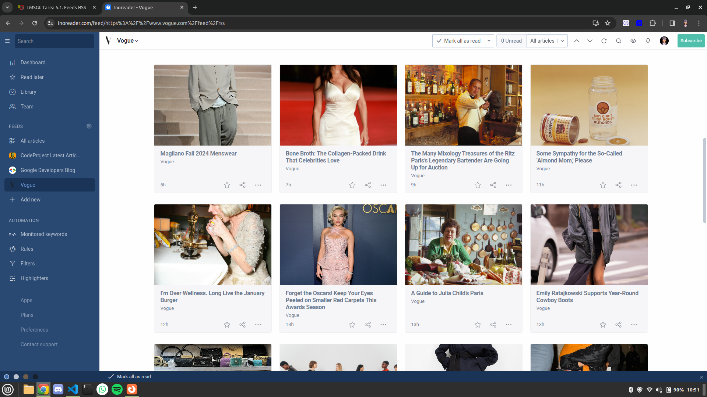
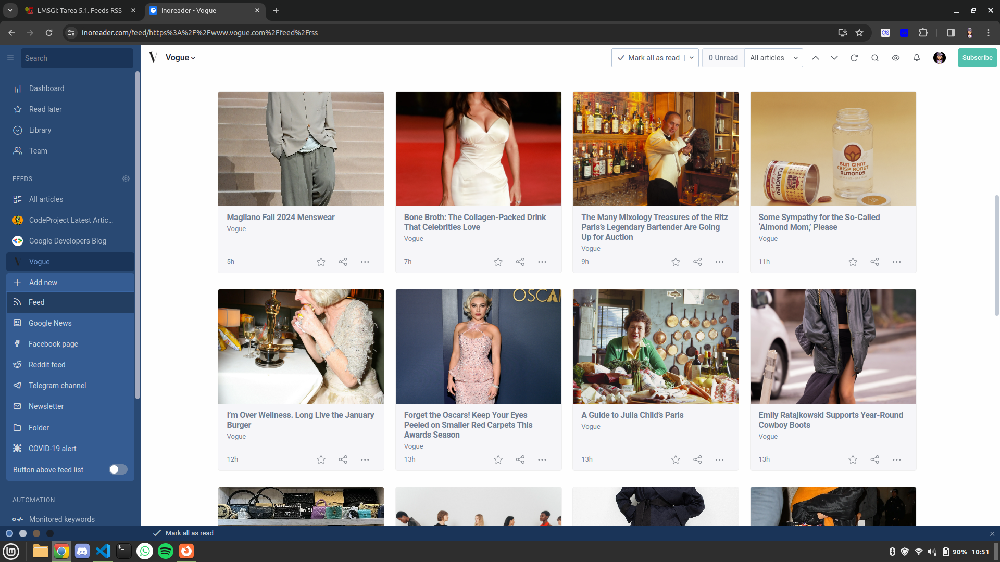
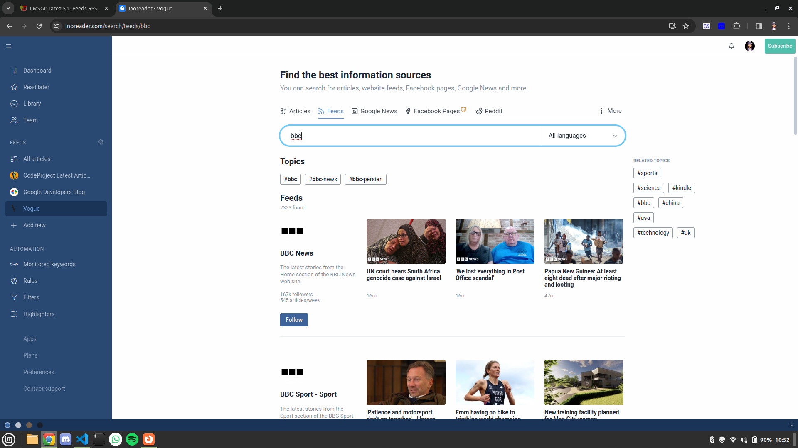
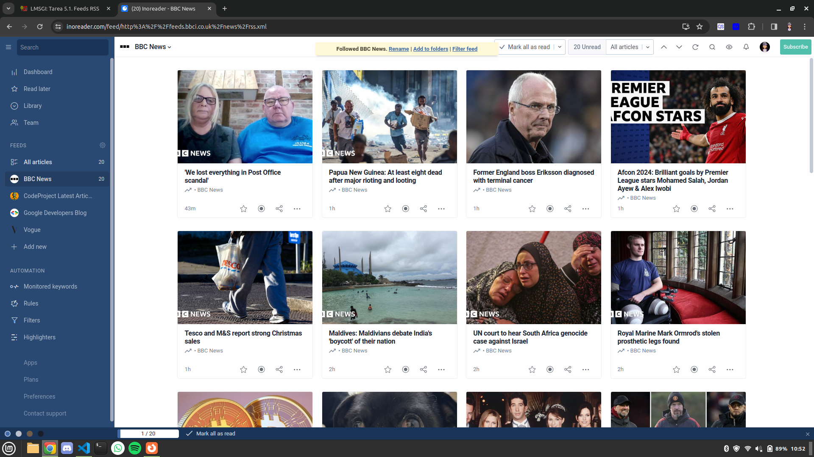

RSS sobre moda
Juegos gratis en steam
Noticias de ciencia de la BBC
He elegido la página de Inoreader.
Para añadir un nuevo feed, damos click en new > Feed
Podemos usar opciones que nos proporcionan, o buscar uno
Una vez añadido, la pagina nos proporciona varias opciones en una toast
RSS sobre moda
Juegos gratis en steam
Noticias de ciencia de la BBC